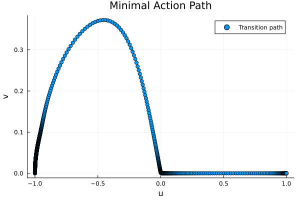
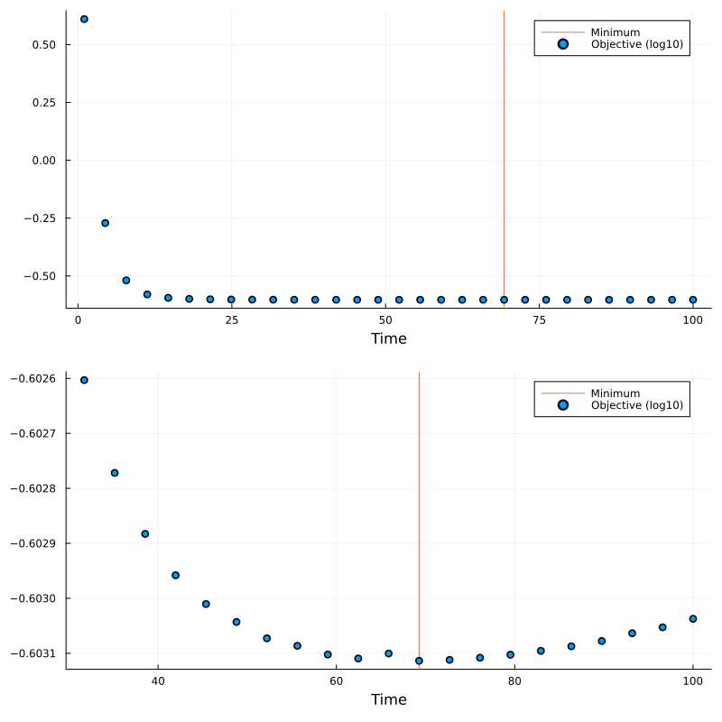

Example: Minimum action method using optimal control
The Minimal Action Method is a numerical technique for finding the most probable transition pathway between stable states in stochastic dynamical systems. It achieves this by minimizing an action functional that represents the path's deviation from the deterministic dynamics, effectively identifying the path of least resistance through the system's landscape. This tutorial demonstrates how to implement MAM as an optimal control problem.
Required Packages
using OptimalControl
using NLPModelsIpopt
using Plots, PrintfProblem Setup
We'll consider a 2D system with a double-well flow, called the Maier-Stein model. It is a famous benchmark problem as it exhibits non-gradient dynamics with two stable equilibrium points at (-1,0) and (1,0), connected by a non-trivial transition path. The system's deterministic dynamics are given by:
Define the vector field
f(u, v) = [u - u^3 - 10*u*v^2, -(1 - u^2)*v]
f(x) = f(x...)Optimal Control Formulation
The minimal action path minimizes the deviation from the deterministic dynamics:
function ocp(T)
action = @def begin
t ∈ [0, T], time
x ∈ R², state
u ∈ R², control
x(0) == [-1, 0] # Starting point (left well)
x(T) == [1, 0] # End point (right well)
ẋ(t) == u(t) # Path dynamics
∫(sum((u(t) - f(x(t))) .^ 2)) → min # Minimize deviation from deterministic flow
end
return action
endInitial Guess
We provide an initial guess for the path using a simple interpolation:
T = 50 # Time horizon
x1(t) = -(1 - t/T) + t/T # Linear interpolation for x₁
x2(t) = 0.3(-x1(t)^2 + 1) # Parabolic guess for x₂
x(t) = [x1(t), x2(t)]
u(t) = f(x(t))
init = (state=x, control=u) # Initial guessSolving the Problem
We solve the problem in two steps for better accuracy:
sol = solve(ocp(T); init=init, grid_size=50) # First solve with coarse grid
sol = solve(ocp(T); init=sol, grid_size=1000) # Refine solution
objective(sol) # Objective value0.2494266208039852Visualizing Results
Let's plot the solution trajectory and phase space:
#plot(sol)
MLP = state(sol).(time_grid(sol))
scatter(
first.(MLP),
last.(MLP);
title="Minimal Action Path",
xlabel="u",
ylabel="v",
label="Transition path",
) # Phase space plot
The resulting path shows the most likely transition between the two stable states given a transient time $T=50$, minimizing the action functional while respecting the system's dynamics.
Minimize with respect to T
To find the maximum likelihood path, we also need to minimize the transient time T. Hence, we perform a discrete continuation over the parameter T by solving the optimal control problem over a continuous range of final times T, using each solution to initialize the next problem.
objectives = []
Ts = range(1, 100, 30)
sol = solve(ocp(Ts[1]); display=false, init=init, grid_size=50)
println(" Time Objective Iterations")
for T in Ts
global sol = solve(ocp(T); display=false, init=sol, grid_size=1000, tol=1e-8)
@printf("%6.2f %9.6e %d\n", T, objective(sol), iterations(sol))
push!(objectives, objective(sol))
end Time Objective Iterations
1.00 4.076020e+00 1
4.41 5.353681e-01 39
7.83 3.026573e-01 13
11.24 2.632187e-01 16
14.66 2.543236e-01 25
18.07 2.516441e-01 38
21.48 2.505986e-01 57
24.90 2.501063e-01 78
28.31 2.498424e-01 95
31.72 2.496875e-01 116
35.14 2.495905e-01 141
38.55 2.495268e-01 152
41.97 2.494835e-01 180
45.38 2.494535e-01 204
48.79 2.494348e-01 154
52.21 2.494177e-01 278
55.62 2.494099e-01 151
59.03 2.494008e-01 355
62.45 2.493966e-01 318
65.86 2.494018e-01 64
69.28 2.493942e-01 623
72.69 2.493952e-01 395
76.10 2.493974e-01 422
79.52 2.494005e-01 374
82.93 2.494046e-01 451
86.34 2.494094e-01 470
89.76 2.494148e-01 504
93.17 2.494230e-01 135
96.59 2.494292e-01 676
100.00 2.494381e-01 14T_min = Ts[argmin(objectives)]
plt1 = scatter(Ts, log10.(objectives); xlabel="Time", label="Objective (log10)")
vline!(plt1, [T_min]; label="Minimum", z_order=:back)
plt2 = scatter(
Ts[10:30], log10.(objectives[10:30]); xlabel="Time", label="Objective (log10)"
)
vline!(plt2, [T_min]; label="Minimum", z_order=:back)
plot(plt1, plt2; layout=(2, 1), size=(800, 800))
This page was generated using Literate.jl.